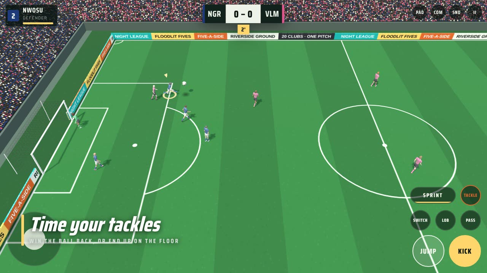
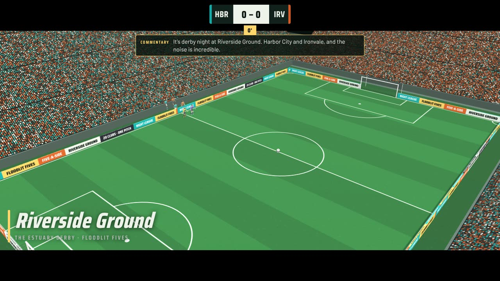
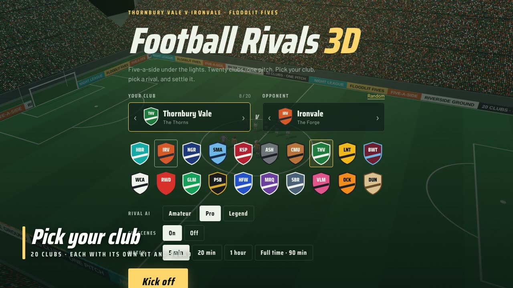
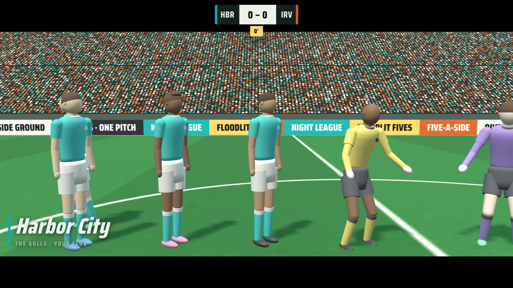
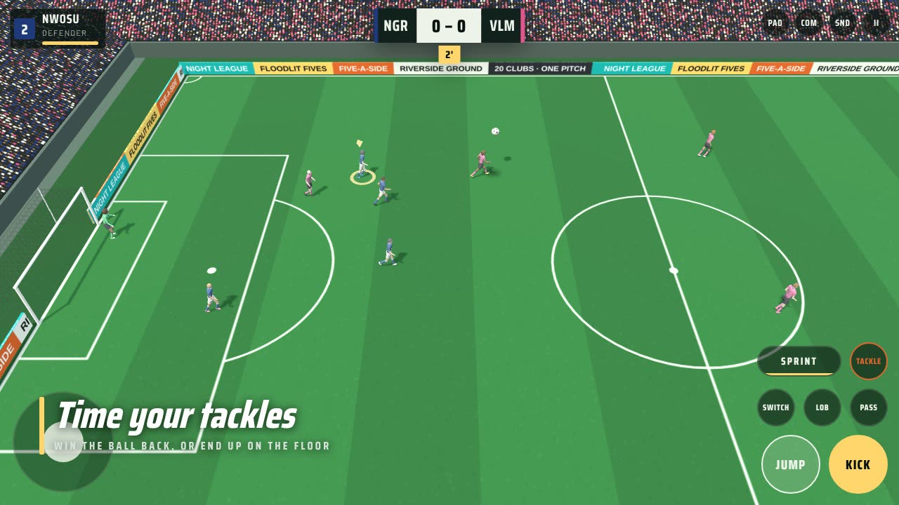
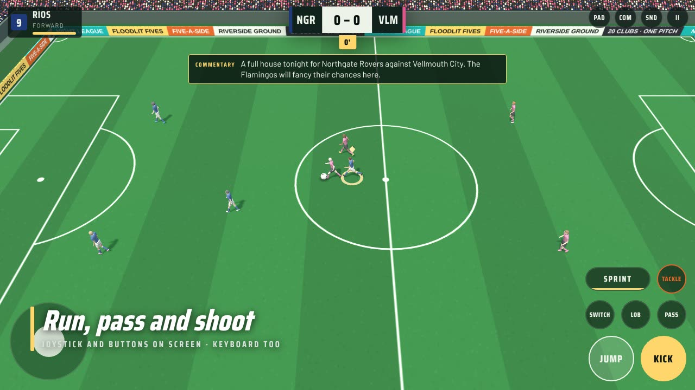
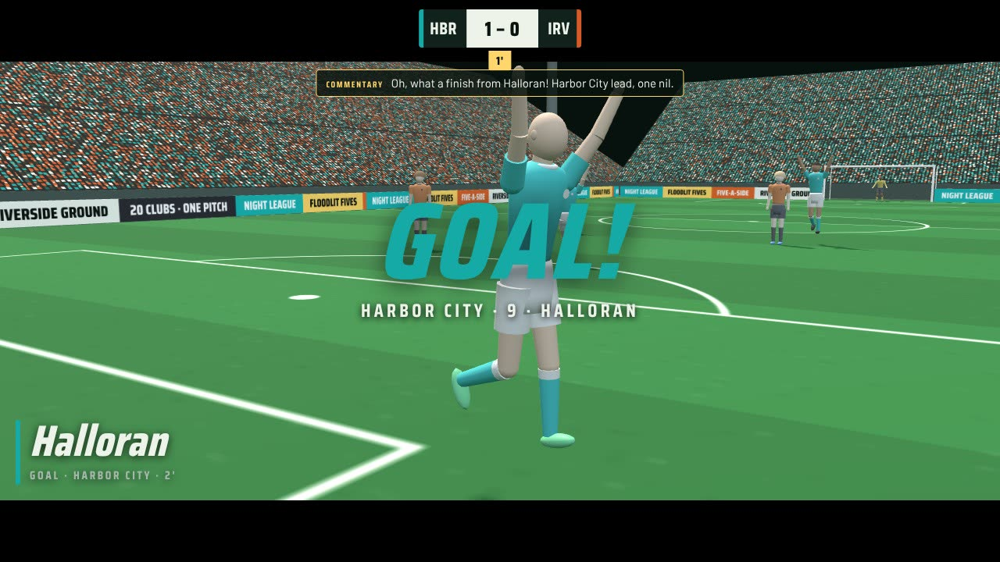
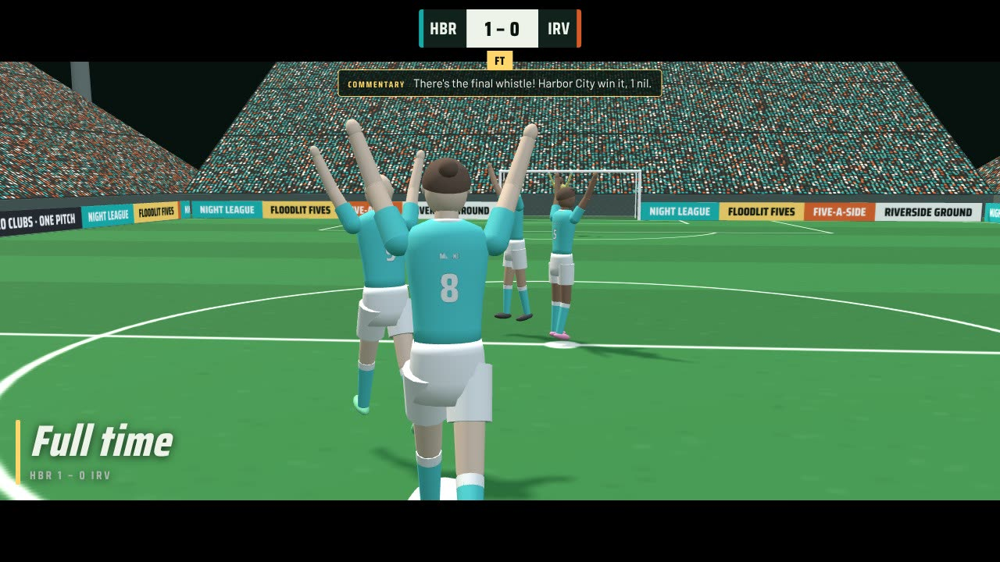
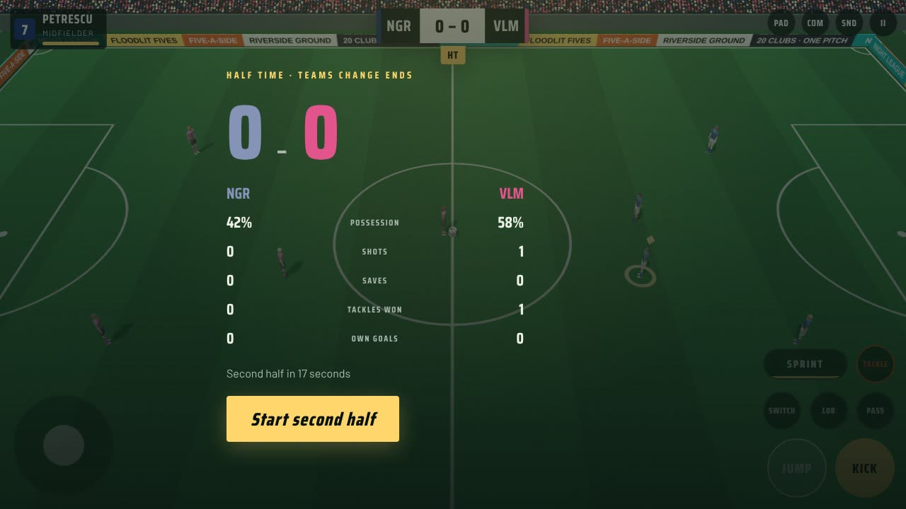
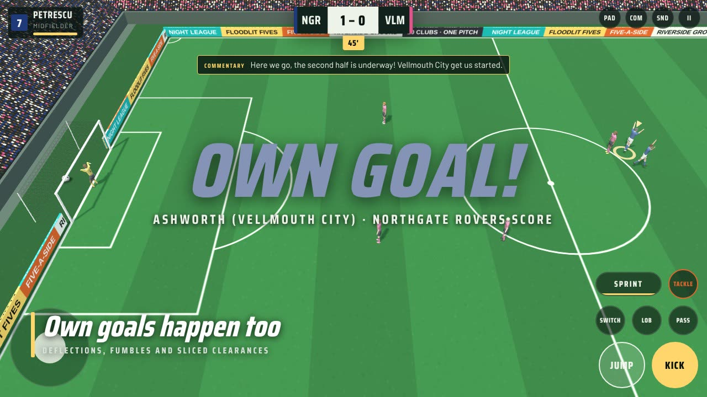

CuriousScout Preview · Report
Football Rivals 3D
A report on the next game planned for CuriousScout: what it is, how it is played, and what it will add to the arcade.
1Introduction
CuriousScout is a small arcade of homemade browser games. This report describes a game that is planned for the arcade, Football Rivals 3D, so that players can find out about it before it is added.
The report explains what the game is, where it takes place, who plays in it and how it is controlled. It also describes the features that happen around a match, such as commentary and cutscenes. Two trailers show the game in motion, and the final sections ask readers to vote on whether it should be added.
2What the game is
Football Rivals 3D is a five-a-side football game shown in three dimensions. Each team has a goalkeeper, two defenders, a midfielder and a forward. The player controls one footballer at a time, and the computer controls everybody else on both teams.
A match is played against a computer-controlled rival at one of three levels of difficulty: Amateur, Pro or Legend. On higher levels the rival players run faster, react sooner, win more tackles and have better goalkeepers.

3The ground and the pitch
Every match takes place at Riverside Ground, a floodlit stadium with stands on all four sides. The stands are filled with supporters in the colours of the two clubs that are playing, and each club’s fans sit behind the goal it defends.
The pitch is surrounded by advertising boards. The ball bounces off these boards rather than going out of play, as it does in many indoor five-a-side games, so play only stops for goals, half time and full time.

4The clubs
The game contains twenty clubs. Each club has its own name, nickname, colours, crest and squad of five players. All of the clubs are invented for the game. Before a match, the player chooses a club to control and a club to play against.
When two clubs with similar shirts meet, the visiting club changes into an away kit so that the teams can be told apart. The best-known fixture is the Estuary Derby between Harbor City and Ironvale, which has its own introduction.
| Club | Nickname | Code |
|---|---|---|
| Harbor City | The Gulls | HBR |
| Ironvale | The Forge | IRV |
| Northgate Rovers | The Wardens | NGR |
| Saltmarsh Athletic | The Waders | SMA |
| Kestrel Park | The Kestrels | KSP |
| Ashdown Borough | The Embers | ASH |
| Coppermill United | The Millers | CMU |
| Thornbury Vale | The Thorns | THV |
| Lanternside | The Lamplighters | LNT |
| Brackwater Town | The Eels | BWT |
| Westcliff Albion | The Cliffs | WCA |
| Redwharf Dockers | The Dockers | RWD |
| Glenmoor | The Heather | GLM |
| Port Sable | The Sables | PSB |
| Highfield Wanderers | The Wanderers | HFW |
| Marrow Quay | The Quaymen | MRQ |
| Stonebridge Rangers | The Masons | SBR |
| Vellmouth City | The Flamingos | VLM |
| Old Carrick | The Carricks | OCK |
| Duneholm | The Dunes | DUN |

5The players
Each footballer is a jointed figure about 1.83 m tall, with bending knees and elbows. Players have one of seven skin tones and one of seven hairstyles, so teammates do not look identical. Every player wears the club’s kit, with their surname and number printed on the back of the shirt. Goalkeepers wear long sleeves and gloves.
The players are animated. They lean forward and pump their arms when they run, swing a leg back before they kick, and stretch out when they dive or slide in for a tackle.


6How the game is played
The game can be played with a keyboard or with buttons on the screen. On phones and tablets, a joystick on the left moves the player and buttons on the right carry out each action. When the player’s team wins the ball, control passes to whichever footballer has it.
| Action | Keyboard | Touch screen |
|---|---|---|
| Move | W A S D or arrow keys | Joystick |
| Sprint | Shift | SPRINT, or push the joystick to its edge |
| Pass | J | PASS |
| Kick (hold for power) | K | KICK |
| Lob pass | L | LOB |
| Jump or header | Space | JUMP |
| Tackle | E | TACKLE |
| Switch player | Q | SWITCH |
| Pause | P or Esc | Pause button |
Sprinting uses stamina, which is shown as a bar and refills when the player stops sprinting. Holding the kick button builds up power, so a longer press produces a harder shot. Jumping lets a player head the ball and hop over a tackle while dribbling.

7Matchday features
Several features take place around the football itself. Together, they are intended to make each match feel like a televised game.
Commentary
A commentator describes the match aloud, using the voice built into the player’s browser. Each line also appears as a caption beneath the scoreboard. The commentator reacts to goals, shots, saves, tackles, headers and near misses, and uses the real names of the players and clubs. Commentary can be switched off during a match.
Cutscenes
Short cinematic sequences, known as cutscenes, play at three points. Before kick-off, the camera sweeps around the stadium and follows both teams out of the tunnel. After a goal, the ball is shown hitting the net in slow motion before the camera circles the scorer. At full time, the winners celebrate while the losing team stands with their hands on their heads. Every cutscene can be skipped, and they can be turned off in the menu.


Half time
Every match has a twenty-second half-time break. The break screen shows the score and statistics for the first half, including possession, shots, saves and tackles won. When the second half begins, the teams change ends, as they do in a real match.

Own goals
As in real football, a team can score in its own net. This can happen when a fast shot deflects off a defender, when a goalkeeper fumbles the ball, or when a defender slices a hurried clearance. Own goals are announced with their own banner and commentary, and they are counted in the match statistics.

8Trailers
Two trailers have been made from real footage of the game. The Official Trailer shows the stadium, the walk-out, a goal and the full-time celebrations. The Gameplay Trailer shows the club picker, the controls, half time and an own goal. Both trailers can also be watched on StarTube.
9Have your say
Football Rivals 3D has not yet been added to CuriousScout. Readers are invited to vote on whether it should be. Each device can vote once, and the totals are shared by everyone who reads this report.
Should Football Rivals 3D be added to CuriousScout?
10Conclusion
Football Rivals 3D is a complete five-a-side football game with twenty clubs, animated players, spoken commentary, cutscenes and a half-time break. It runs in a web browser on computers, tablets and phones, and it can be played with a keyboard or a touch screen.
If it is added, it will join Football Rivals (World Cup) as a second football game in the arcade. Whether it is added will depend partly on the results of the vote above.
11Glossary
- Away kit
- A second set of colours that a club wears when its usual shirts are too similar to its opponent’s.
- Commentary
- A spoken description of a match as it happens.
- Cutscene
- A short sequence in a game, like a scene from a film, in which the player watches rather than plays.
- Deflection
- When the ball glances off a player and changes direction.
- Derby
- A match between two rival clubs from the same area.
- Five-a-side
- A form of football with five players in each team, usually played on a smaller pitch.
- Fixture
- A match between two named clubs.
- Letterbox bars
- Black bars at the top and bottom of the screen that make a scene look like a cinema film.
- Own goal
- A goal that a player accidentally scores in their own team’s net. It counts for the other team.
- Stamina
- How much energy a player has left for sprinting.
- Trailer
- A short video that shows what a game or film is like before it is released.